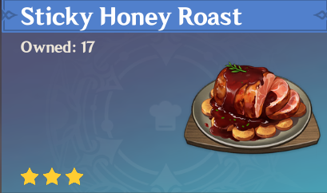

Sticky Honey Roast Recipe
Description
A meat dish paired with carrots and harmonized with the glazed sweet sauce.
This is an adventurer type dish that will decrease all party members' stamina consumption by 20% for 900s.
Ingredients
- 2 Raw Meat
- 2 Carrot
- 2 Sugar
Steps
- Gather raw materials such as raw meat, carrots, and sweet flowers
- Prepare the sweet flowers by turning them into sugar
- Complete the quest: "Sara's Worries" to unlock the recipe
- Cook Stick Honey Roast

Return to Homepage